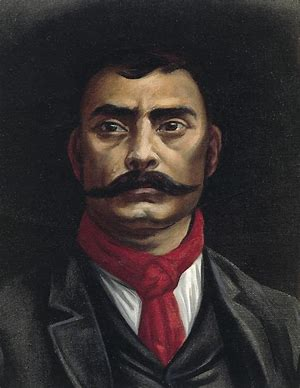

Del mes de Septiembre de 1977 nacido en la Ciudad de México
Información Personal

Aptitudes y habilidades
Liderazgo, empatía, flexible, responsable.
Trabajo en equipo, comunicación, Definición de objetivos, desarrollo de planes de trabajo, identificación, registro, e informes de problemas
 Datos personales
Datos personales